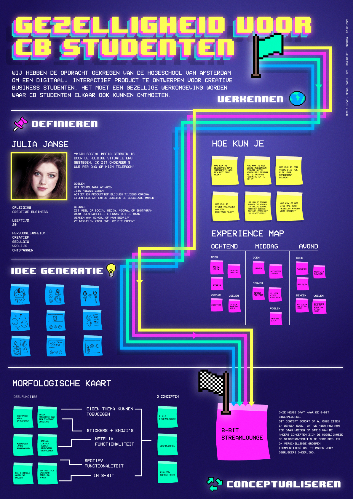
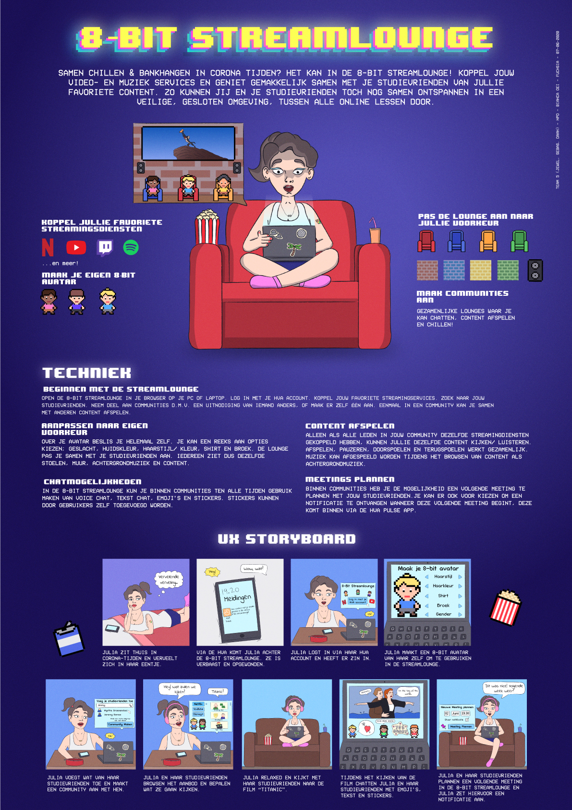

Hey! Mijn naam is Sebas, 23 jaar oud en ik kom uit Hilversum. Ik ben vierdejaars student Communication and Multimedia Design aan de Hogeschool van Amsterdam.
Ik hou er enorm van om creatief bezig te zijn en altijd iets te maken. CMD is dan ook helemaal mijn opleiding! Naast de reguliere vakken heb ik daarom ook het Honours programma voltooid, en is mijn werk twee keer genomineerd voor de beste studentenwerk prijs binnen mijn opleiding.
Alle verschillende disciplines van design vind ik tof om aan te werken; UX/ UI, visuals, development, onderzoek, noem het maar op. Vandaar dat ik me graag bezig houd met game design, het is erg breed en hier komt alles bij kijken (daarnaast ben ik gewoon een nerd). Maar in principe werk ik als digital designer. Verder werk ik graag in een team en ben ik erg gericht op details.
Meer weten? Neem gerust contact met me op!
Studiejaar: 3
Vak: Minor Applied Game Design
Aanpak: Individueel Project
Bearing the Hammer is een 2D platformer over een Beer met zijn Klauwhamer.
In het spel zijn spelers een Beer met een Hamer. Deze Beer en Hamer reizen slaan- en trekkend langs uitdagende levels en het ontspannende Bear Plaza om een vrolijk avontuur te beleven.
Het doel van dit project was om een casual 2D platformer te maken met een eenvoudige core mechanic. In dit geval is dat het objecten slaan- en/ of trekken van objecten met een klauwhamer. Hiermee lossen spelers in alle levels platforming-uitdagingen en puzzels op. Dit project is vrijwel volledig door mijzelf gemaakt; het game design, de art & animaties, de code & het development.
"Wat een fantastisch spel! Leuk om te spelen, uitgebreid, polished, ver boven het niveau dat we van studenten verwachten voor dit vak." - Walter Giannuzzi, docent Applied Game Design
Studiejaar: 3
Vak: Eigen Initiatief
Aanpak: Individueel Project
A Ghost Miner Story is een concept voor een video game die nog in ontwikkeling is.
Het doel van deze huidige demo was om een 3D omgeving te bouwen waarin spelers een 2D-karakter kunnen besturen in acht verschillende richtingen, en het ontwerpen van een uniek personage en concept. In dit prototype is dan ook vrijwel alles door mijzelf gemaakt; het game design, de 2D & 3D art/ assets en animaties, de code en het development.
Hoe is deze mijnwerker gestorven? Welke mysteries zijn er nog meer te ontdekken in deze mijn? Hou deze website en mijn social media kanalen in de gaten voor meer updates over deze game.
Studiejaar: 3
Vak: Eigen Initiatief
Aanpak: Teamproject met Donna Schilperoort
Froggy Focus is een idle game voor smartphones om spelers minder afgeleid te laten raken door hun telefoons.
In dit spel verdienen spelers muntjes voor tijd die zij niet op hun mobiel besteden. Hiermee kunnen voor hun zelf samengestelde, virtuele kikkers leuke cosmetische items gekocht worden, en kan de omgeving van de kikker ingericht worden met toffe meubels. Daarnaast worden statistieken bijgehouden om spelers nog meer te motiveren van hun mobiel af te blijven.
Dit project is samen met medestudent Donna Schilperoort ontwikkeld; zij heeft de art & assets getekend, en ikzelf heb de code & het development op me genomen. Samen hebben we het game design gedaan.
Studiejaar: 3
Vak: Behavior Design
Aanpak: Teamproject met Nine Revius, Zoey ter Voort & Jimmy Dekker
Treehouse Connect is een concept ontwikkeld in opdracht van de NDSM Treehouse om daar werkende kunstenaars meer te laten participeren aan events op het terrein.
Met ons concept zijn op basis van behavior design en gericht doelgroeponderzoek een aantal functionaliteiten ontworpen om een fijnere omgang tussen Treehouse kunstenaars te stimuleren en deze meer aan events mee te laten doen.
Treehouse kunstenaars hebben via de app een gemakkelijk overzicht d.m.v. een interactieve kaart, kunnen gemakkelijk hun eigen events organiseren via een gestreamlined proces en kunnen aangeven wanneer andere kunstenaars in hun eigen atelier welkom zijn.
Studiejaar: 1
Vak: New Product Development
Aanpak: Teamproject met Daan Ketelaars & Jewel Buenaventura
De 8-BIT Streamlounge is een concept ontwikkeld om gezelligheid tussen studenten tijdens de corona lockdowns te verbeteren.
Via een video game-achtige bioscoopsetting kunnen gebruikers in dit concept met elkaar content streamen. Het idee is dat bestaande streamingsdiensten worden gekoppeld aan de dienst. De streamlounge is in te richten naar voorkeur en zijn er verschillende chatmogelijkheden.
Procesposter:
Conceptposter:
Studiejaar: 2
Vak: Korte Stage
Pili.nl bestaat helaas niet meer, maar het was een tool waarmee ZZP'ers gemakkelijk facturen en offertes konden beheren, verzenden en versturen.
Tijdens mijn stage bij Pili ben ik als UX designer aan de slag gegaan. Ik heb bij alle stappen van de website en app ontwerpen mogen helpen. Hiervoor heb ik uitgebreide design documenten opgesteld en schermen ontworpen, die vervolgens aan front-enders werden doorgegeven voor het verdere ontwikkelen van de tool. Ondanks het feit dat Pili niet meer bestaat heb ik in mijn tijd daar onwijs veel geleerd over ontwerpen in een professionele setting, en neem ik deze lessen nog steeds mee in mijn dagelijkse design werk.
"Sebas has been incrementally important in product development during his time at pili. He continuously delivered work to the highest of our standards and incorporated constructive feedback instantly."- Lucas Buchmuller, oprichter van Pili